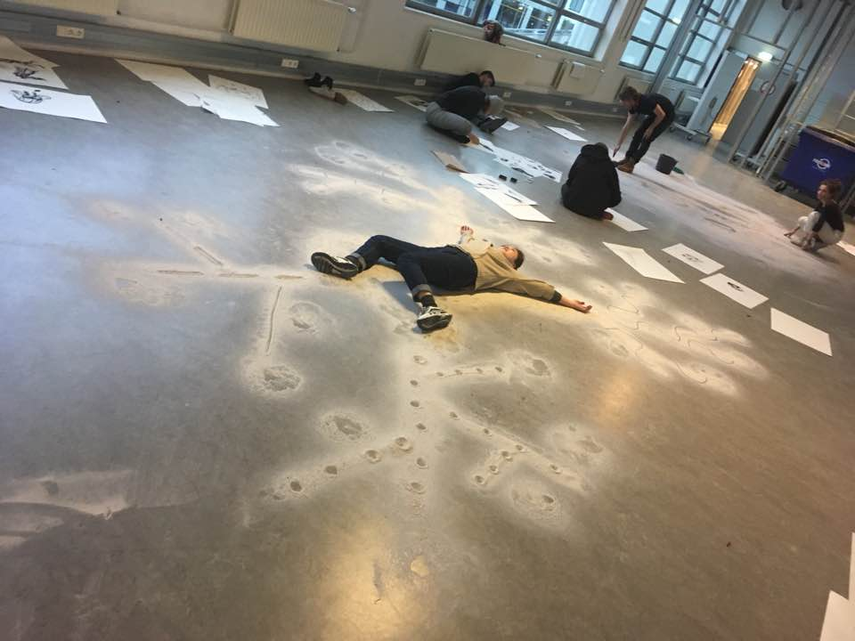

This is chung lee's facebook page.

선의의 옹호자형은 가장 흔치 않은 성격 유형으로 인구의 채 1%도 되지 않습니다. 그럼에도 불구하고 나름의 고유 성향으로 세상에서 그들만의 입지를 확고히 다집니다. 이들 안에는 깊이 내재한 이상향이나 도덕적 관념이 자리하고 있는데, 다른 외교형 사람과 다른 점은 이들은 단호함과 결단력이 있다는 것입니다. 바라는 이상향을 꿈꾸는데 절대 게으름 피우는 법이 없으며, 목적을 달성하고 지속적으로 긍정적인 영향을 미치고자 구체적으로 계획을 세워 이행해 나갑니다.